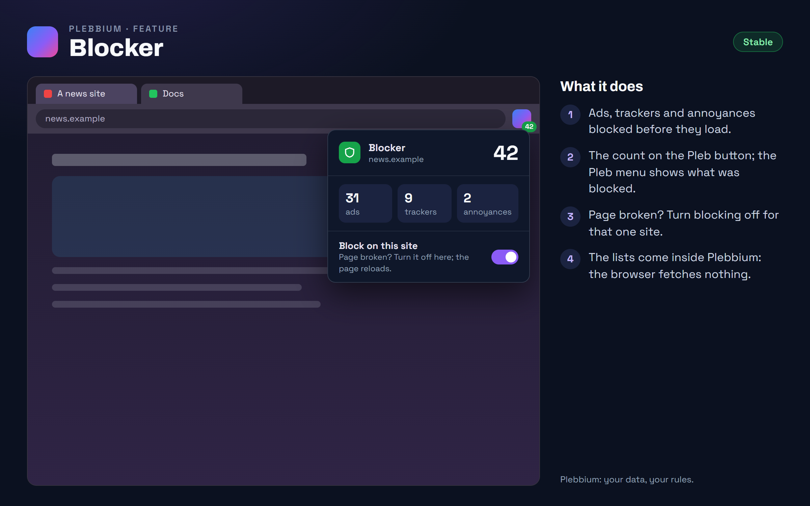

All features › Shipped › Blocker
Blocker
Stablesince 3604Ads, trackers and annoyances such as cookie notices, newsletter pop-ups and app banners are blocked by Chromium itself, from public lists. The count sits on the Pleb button; one click turns blocking off for a site.

How to use it
- Nothing to do: it is on from the start.
- See what it did: click the Pleb button. The Pleb menu shows the ads, trackers and annoyances blocked on this page.
- Page broken? In the Pleb menu, turn off Block on this site; the page reloads.
- For a sidebar site: right-click it › Block ads and trackers.
When it arrived
156.0.8078.360418 Oct 2026 · Beta and Stable
The blocker, on from the start.
156.0.8078.360619 Oct 2026 · Beta and Stable
The blocker's switch for each sidebar site.
Why it works this way
Chromium blocks, not an add-on
The lists become rules Chromium itself applies, so requests are stopped before they leave, and the browser keeps the count.
Exact rules only
Filters the browser can express exactly are kept; the rest are dropped, never guessed at, so the blocker doesn't break pages by approximation.
Public lists, shipped inside
EasyList, EasyPrivacy, the EasyList Cookie List and Fanboy's Annoyance List (without its social part, which hides posts people want to see). They update with Plebbium; the browser fetches nothing.